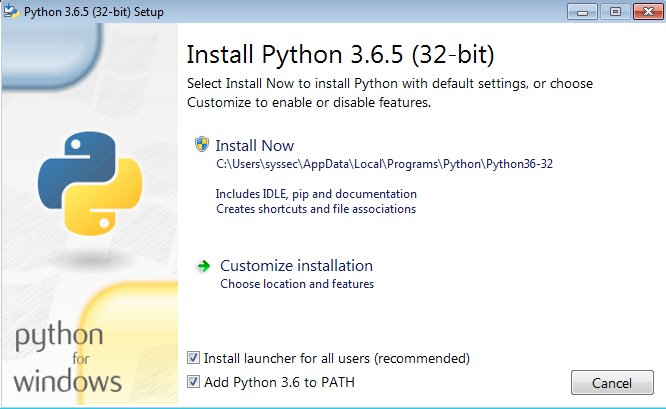
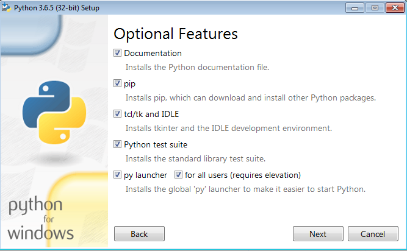
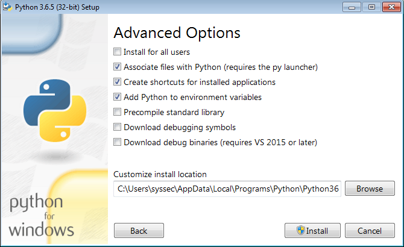

Python Scripts¶
Installing Python 3.6¶
Windows¶
Download the latest version of Python 3.6 from here, then run the installer. We will guide you through the installation.

Make sure the option “Add Python 3.6 to PATH” is checked. Otherwise you won’t be able to run scripts from anywhere in the filesystem. Choose “Customize installation” for the next step.

The option “pip” has to be checked. All other options are not mandatory, but can be helpful when working with Python. Click “Next” to continue.

The option “Add Python to environment variables” has to be checked. This is required to get access to the Python package management pip. Click “Install”.
To check if everything was installed correctly type python --version into Powershell. It should display the Python 3.6 version.
Linux¶
Ubuntu/Debian
Open you terminal and type
sudo apt install python3 python3-pip
Fedora
Open you terminal and type
sudo dnf install python3 python3-pip
Arch Linux
Everything should already be installed.
Installing additional requirements with pip¶
Sometimes our scripts depend on packages from the Python repositories. You can check for these requirements by opening the script with text editor. There should be a section at the start of the script that lists the dependencies and gives you the command to aquire them.
Pillow is required for image manipulation. Install with pip:
$ pip install pillow
Windows¶
Open Powershell or cmd.exe (only if the former is not installed). Type python -m and paste everything after the Dollar symbol behind it.
Example:
python -m pip install pillow
Press Enter. If successful, it will print the following lines.
Collecting markdown
Downloading Pillow-5.0.0-cp36-cp36m-manylinux1_x86_64.whl (78kB)
100% |████████████████████████████████| 81kB 1.2MB/s
Installing collected packages: pillow
Successfully installed pillow-5.0.0
The script can now be used properly.
Linux¶
Open the terminal and paste everything after the Dollar symbol into the terminal.
Example:
pip install pillow
Press Enter. If successful, it will print the following lines.
Collecting markdown
Downloading Pillow-5.0.0-cp36-cp36m-manylinux1_x86_64.whl (78kB)
100% |████████████████████████████████| 81kB 1.2MB/s
Installing collected packages: pillow
Successfully installed pillow-5.0.0
The script can now be used properly.
Running a script¶
Windows: Use Powershell or cmd.exe (only if the former is not installed) to run python scripts. Do not use the Python Console that was installed with Python 3.
Download the script. Open your terminal (Powershell or equivalent on Windows) and navigate to the folder where the script is located. To get an overview of what the script is doing and how to utilize it properly, use the --help argument.
python3 <filename-of-the-script> --help
Replace <filename-of-the-script> with the filename of the script you want to run, e.g. terrain_transform.py. --help will print a short description of every (optional) argument.
Example:
$ python3 terrain_transform.py --help
usage: terrain_transform.py [-h] [-i] [--legacy-mode PALETTE_FILE] inputfile
Transforms an image from cartesian to dimetric projection.
positional arguments:
inputfile The image you want to transform
optional arguments:
-h, --help show this help message and exit
-i, --inverse Transforms from dimetric to cartesian
--legacy-mode PALETTE_FILE
Uses BMP instead of PNG as output format and the color
PINK (255,0,255) for background instead of the ALPHA
channel. Requires an image with the AoE2 palette.
Positional arguments must be specified when you run the script. Optional arguments are not required, but activate different functionality of the script. They sometimes have a short and a long version of which you can choose either (e.g. -i and --inverse both do the same thing). The first line (usage) tells you where you have to put positional or optional arguments. Once you have chosen the arguments, you can run the script from terminal.
Example:
python3 --inverse terrain_transform.py TERRAIN.png